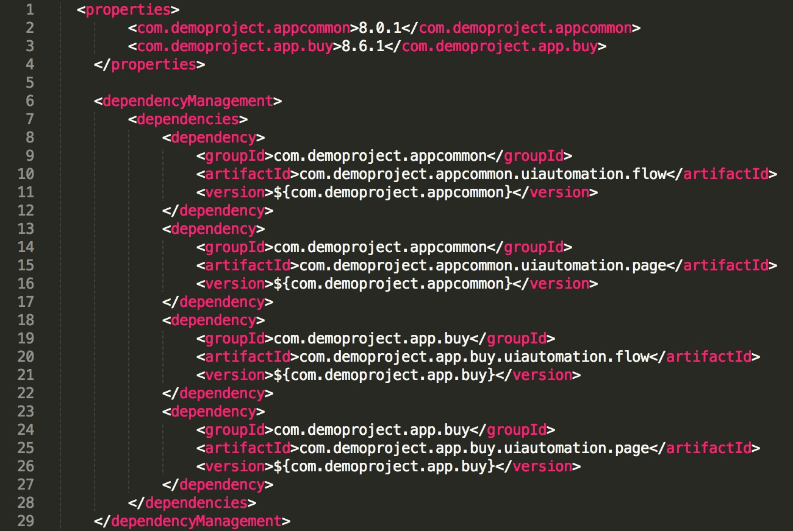

- 00 开篇词 从“小工”到“专家”，我的软件测试修炼之道.md.html
- 01 你真的懂测试吗？从“用户登录”测试谈起.md.html
- 02 如何设计一个“好的”测试用例？.md.html
- 03 什么是单元测试？如何做好单元测试？.md.html
- 04 为什么要做自动化测试？什么样的项目适合做自动化测试？.md.html
- 05 你知道软件开发各阶段都有哪些自动化测试技术吗？.md.html
- 06 你真的懂测试覆盖率吗？.md.html
- 07 如何高效填写软件缺陷报告？.md.html
- 08 以终为始，如何才能做好测试计划？.md.html
- 09 软件测试工程师的核心竞争力是什么？.md.html
- 10 软件测试工程师需要掌握的非测试知识有哪些？.md.html
- 11 互联网产品的测试策略应该如何设计？.md.html
- 12 从0到1：你的第一个GUI自动化测试.md.html
- 13 效率为王：脚本与数据的解耦 + Page Object模型.md.html
- 14 更接近业务的抽象：让自动化测试脚本更好地描述业务.md.html
- 15 过不了的坎：聊聊GUI自动化过程中的测试数据.md.html
- 16 脑洞大开：GUI测试还能这么玩（Page Code Gen + Data Gen + Headless）？.md.html
- 17 精益求精：聊聊提高GUI测试稳定性的关键技术.md.html
- 18 眼前一亮：带你玩转GUI自动化的测试报告.md.html
- 19 真实的战场：如何在大型项目中设计GUI自动化测试策略.md.html
- 20 与时俱进：浅谈移动应用测试方法与思路.md.html
- 21 移动测试神器：带你玩转Appium.md.html
- 22 从0到1：API测试怎么做？常用API测试工具简介.md.html
- 23 知其然知其所以然：聊聊API自动化测试框架的前世今生.md.html
- 24 紧跟时代步伐：微服务模式下API测试要怎么做？.md.html
- 25 不破不立：掌握代码级测试的基本理念与方法.md.html
- 26 深入浅出之静态测试方法.md.html
- 27 深入浅出之动态测试方法.md.html
- 28 带你一起解读不同视角的软件性能与性能指标.md.html
- 29 聊聊性能测试的基本方法与应用领域.md.html
- 30 工欲善其事必先利其器：后端性能测试工具原理与行业常用工具简介.md.html
- 31 工欲善其事必先利其器：前端性能测试工具原理与行业常用工具简介.md.html
- 32 无实例无真相：基于LoadRunner实现企业级服务器端性能测试的实践（上）.md.html
- 33 无实例无真相：基于LoadRunner实现企业级服务器端性能测试的实践（下）.md.html
- 34 站在巨人的肩膀：企业级实际性能测试案例与经验分享.md.html
- 35 如何准备测试数据？.md.html
- 36 浅谈测试数据的痛点.md.html
- 37 测试数据的“银弹”- 统一测试数据平台（上）.md.html
- 38 测试数据的“银弹”- 统一测试数据平台（下）.md.html
- 39 从小作坊到工厂：什么是Selenium Grid？如何搭建Selenium Grid？.md.html
- 40 从小工到专家：聊聊测试执行环境的架构设计（上）.md.html
- 41 从小工到专家：聊聊测试执行环境的架构设计（下）.md.html
- 42 实战：大型全球化电商的测试基础架构设计.md.html
- 43 发挥人的潜能：探索式测试.md.html
- 44 测试先行：测试驱动开发(TDD).md.html
- 45 打蛇打七寸：精准测试.md.html
- 46 安全第一：渗透测试.md.html
- 47 用机器设计测试用例：基于模型的测试.md.html
- 48 优秀的测试工程师为什么要懂大型网站的架构设计？.md.html
- 49 深入浅出网站高性能架构设计.md.html
- 50 深入浅出网站高可用架构设计.md.html
- 51 深入浅出网站伸缩性架构设计.md.html
- 52 深入浅出网站可扩展性架构设计.md.html
- 测试专栏特别放送 浅谈全链路压测.md.html
- 测试专栏特别放送 答疑解惑第一期.md.html
- 测试专栏特别放送 答疑解惑第七期.md.html
- 测试专栏特别放送 答疑解惑第三期.md.html
- 测试专栏特别放送 答疑解惑第二期.md.html
- 测试专栏特别放送 答疑解惑第五期.md.html
- 测试专栏特别放送 答疑解惑第六期.md.html
- 测试专栏特别放送 答疑解惑第四期.md.html
- 结束语 不是结束，而是开始.md.html
- 捐赠
19 真实的战场：如何在大型项目中设计GUI自动化测试策略
在前面的文章中，我介绍过GUI自动化测试的页面对象模型和业务流程封装等相关知识，也提到过大型全球化电商网站的GUI自动化测试，那如何把已经学到的GUI测试理论知识用到大型全球化电商网站的测试中呢？
今天，我的分享就从“实战”这个角度展开，带你看看实际的大型全球化电商网站的GUI自动化测试如何开展。这场实战，我将从以下两个方面展开：
测试策略如何设计？这一点，我会根据亲身经历的实际项目，和你探讨GUI测试的分层测试策略。
测试用例脚本如何组织？需要注意的是，对于这个问题，我不是要和你讨论测试用例的管理，而是要讨论测试用脚本的管理。比如，当需要组装上层的端到端（E2E）测试时，如何才能最大程度地重用已有的页面对象以及业务流程（business flow）。
如果你所在的企业或者项目正在大规模开展GUI测试，并且准备使用页面对象模型以及业务流程封装等最佳实践的话，那么，你很可能会遇到本文所描述的问题并且迫切需要相应的解决办法。
大型全球化电商网站的前端模块划分
在正式讨论大型全球化电商网站的GUI自动化测试策略设计之前，我先简单介绍一下电商网站的前端架构，为避免过多的技术细节引起不必要的干扰，我只会概要性地介绍与GUI自动化测试密切相关的部分。
由于大型全球化电商网站的业务极其庞大，所以前端架构也要按照不同的业务模块来划分，比如用户管理模块、商户订单管理模块、商户商品管理模块等等。
当然由于这些前端模块都会使用项目自己封装的组件库，比如自定义开发的列表组件、登录组件、信用卡组件等，我们通常会把自定义开发的这些所有组件都放在一个“公共组件库”中，为前端模块提供依赖。
所以，从代码库（Repository）的角度来看，各个前端模块都有各自独立的代码库，除此之外还会有一个公共组件的代码库。
大型全球化电商网站的GUI自动化测试策略设计
了解了大型全球化电商网站前端模块的划分后，我们再来看看它的GUI自动化测试策略是如何设计的。
总体来看，对大型网站来讲，GUI自动化测试往往应该做得比较轻量级，而不应该把大量的功能测试，以及功能的组合测试放在GUI自动化测试中，正如我在第11篇文章《互联网产品的测试策略应该如何设计？》中谈到的，GUI测试通常只覆盖最核心且直接影响主营业务流程的E2E场景。
但同时，GUI的验证一定不是在系统全部完成后才真正开展的，也应该是分阶段、分层次来设计制定测试策略的，那么接下来我也将会按照自底向上的顺序分层次介绍GUI自动化的测试策略。
首先，要从前端组件的级别来保证质量，也就是需要对那些自定义开发的组件进行完整全面的测试。
公共组件库会被很多上层的前端模块依赖，它的质量将直接影响这些上层模块的质量，所以我们往往会对这些公共组件进行严格的单元测试。最常用的方案是：基于Jest开展单元测试，并考量JavaScript的代码覆盖率指标。
Jest是由Facebook发布的，是一个基于Jasmine的开源JavaScript单元测试框架，是目前主流的JavaScript单元测试方案。
完成单元测试后，往往还会基于被测控件构建专用的测试页面，在页面层面再次验证控件相关的功能和状态。这部分测试工作也需要采用自动化的形式实现，具体的做法是：
先构建一个空页面，并加入被测控件，由此可以构建出一个包含被测控件的测试页面，这个页面往往被称为Dummy Page；
从黑盒的角度出发，在这个测试页面上通过手工和自动化的方式操作被测控件，并验证其功能的正确性。
对于自动化的部分，需要基于GUI自动化测试框架开发对应的测试用例。这些测试用例，往往采用和GUI E2E一样的测试框架，也是从黑盒的角度来对被测控件做功能验证。
其次，每一个前端模块，都会构建自己的页面对象库，并且在此基础上封装开发自己的业务流程脚本。这些业务流程的脚本，可以组装成每个前端模块的测试用例。
以用户管理模块为例，测试用例的组装过程如下：
- 首先，把用户管理模块中涉及到的所有页面，比如登录页面、用户注册页面等，按照页面对象模型的要求写成Page类；
- 然后，利用这些Page类封装业务流程脚本，比如用户登录流程，用户注册流程等；
- 最后，在GUI测试用例脚本中，调用封装好的业务流程脚本构成该模块的GUI测试用例。
在这个阶段，测试用例需要完整覆盖该模块的所有业务逻辑以及相关的功能测试点，但是并不会实现所有测试用例的自动化。
自动化测试用例的原则，通常是：优先选取业务关键路径以及Happy Path作为自动化测试的范围。在资源充裕的情况下，我们希望这个阶段的自动化率可以达到70%-80%。 所以，前端模块的质量保证主要依赖这部分测试。
如果你比较细心，一定还记得我在之前的文章中有提到过，“GUI的自动化测试往往只覆盖最核心且直接影响主营业务流程的E2E场景“，并且”GUI测试遵循“手工测试为主，自动化为辅”的策略，而这里又建议说理想的自动化率应该达到70%~80%，是不是有点前后矛盾的感觉。
其实，这是两个层面的测试，这里70%-80%的GUI自动化覆盖率是针对模块级别的要求；而“自动化测试为辅，手工为主，以及只覆盖核心业务场景”针对的是系统级别的E2E测试。这里容易引起混淆的点是模块测试和系统级别E2E测试都是属于GUI自动化测试的范畴。
最后，组合各个前端模块，并站在终端用户的视角，以黑盒的方式使用网站的端到端（E2E）测试。 这部分的测试主要分为两大部分：
- 一部分是，通过探索式测试的方法手工执行测试，目标是尽可能多地发现新问题；
- 另一部分是，通过GUI自动化测试执行基本业务功能的回归测试，保证网站核心业务相关的所有功能的正确性。
虽然这部分端到端GUI测试用例的绝对数量不多，往往是几百个的规模，但是对于保证最终网站的质量却起着非常关键的作用。
可以这样说，如果这些端到端的GUI自动化测试用例100%通过，那么上线后基本业务功能的质量就不会有大问题。所以，这部分测试工作的重要性不言而喻。
那么，接下来的问题是，应该由谁来开发这部分端到端的GUI自动化测试用例呢？
每个前端模块都会有对应的Scrum团队，他们会负责开发该模块的页面对象模型、业务流程脚本以及测试用例。而端到端的GUI自动化测试不隶属于任何一个Scrum团队。
这种情况下，最好的做法就是：成立一个专门的测试团队，负责这种系统级别的GUI测试。这样的团队，往往被称为E2E测试团队。
很显然，如果由E2E团队从无到有地开发这部分GUI自动化测试的脚本，效率低下。而且，这部分测试会涉及很多前端模块，当各个前端模块的需求、业务流程以及页面实现有任何变动时，E2E团队都很难做到及时更新。
所以，解决这个问题的最佳实践就是：E2E团队应该尽可能地利用各个模块已有的页面对象和业务流程脚本，组装端到端的GUI测试。
这样一方面最大程度地减少了重复工作，另一方面可以把各个模块的变更及时反映到端到端的GUI测试中，因为端到端的GUI测试用例是直接调用各个模块的页面对象和业务流程脚本，而这些页面对象和业务流程脚本都是由每个模块自己的Scrum团队维护的。
而为了能够在端到端的GUI自动化测试中，复用各个模块的页面对象和业务流程脚本，我们就必须考虑的问题，也就是我今天要和你探讨的第二个话题：GUI自动化测试脚本应该如何组织？
大型全球化电商网站的GUI自动化测试脚本管理
原有的方案，不能解决端到端的GUI自动化测试复用各个模块的页面对象和业务流程脚本的问题，在不断的实践中，我总结了一个如图1所示的脚本组织结构来解决这个问题。
图1 大型全球化电商网站的GUI自动化测试脚本管理
也就是说，将各个模块的页面对象和业务流程脚本放在各自的代码库中，并引入页面对象和业务流程脚本的版本管理机制，通常采用页面对象和业务流程脚本的版本号和开发版本号保持一致的方案。
比如模块A的版本号是V1.0.0，那么对应的页面对象库和业务流程脚本的版本号也应该是V1.0.0。
在端到端的GUI自动化测试脚本中，引用各个模块正确的页面对象和业务流程脚本的版本号，测试用例代码就可以直接调用模块的页面对象和业务流程脚本了。
具体在测试项目中，模块版本的依赖往往是用POM来配置的，如图2展示了一个典型测试项目的POM文件中的版本依赖关系，其中引用了两个模块，appcommon模块对应的就是上文提到的“公共组件库”，而app.buy对应的就是具体依赖的前端模块。
由于这只是一个示例，所以我只保留了两个依赖模块，实际的端到端GUI测试项目往往会包含大量的模块依赖。

图2 典型测试项目的POM文件中的版本依赖关系
在这种管理机制下，E2E团队不需要重复开发任何的页面对象和业务流程脚本，而且可以始终保证与各个模块的最新实现同步，同时端到端的GUI测试用例脚本也会比较稳定，不会因为各个模块的改动而频繁地修改。
这样一来，E2E团队就会有更多的时间和精力去设计并执行探索式测试，发现更多的潜在缺陷，形成良性循环。
总结
我从实战的角度，介绍了大型全球化电商网站GUI测试的策略设计以及测试脚本管理的问题：
首先，要从前端组件的级别来保证质量，也就是需要对那些自定义开发的组件进行完整全面的测试。通常前端组件会基于Jest做比较严格的单元测试。
其次，每一个前端模块，都会构建自己的页面对象库，并且在此基础上封装开发自己的业务流程脚本。这些业务流程的脚本，可以组装成每个前端模块的测试用例。
最后，把各个前端模块组合在一起之后，站在终端用户的视角以黑盒的方式使用网站的端到端的测试。端到端的测试应该尽可能多地重用各个模块的页面对象库和业务流程脚本来完成。
而为了能够在端到端的GUI自动化测试中，复用各个模块的页面对象和业务流程脚本，我建议的方案是：对各个前端业务模块的页面对象库和业务流程脚本，实施版本化管理机制。
思考题
你所在的公司或者项目团队，是否已经或者正计划开展E2E GUI测试？开展过程中，遇到过什么难题，你们又是如何解决的？
欢迎你给我留言。
© 2019 - 2023 Liangliang Lee. Powered by gin and hexo-theme-book.